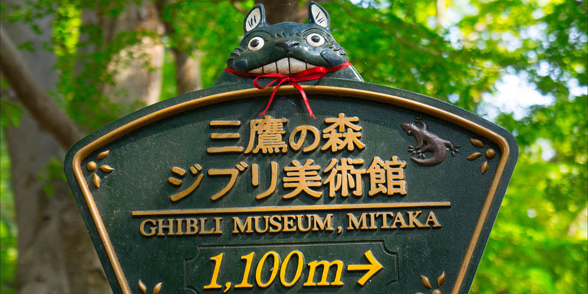
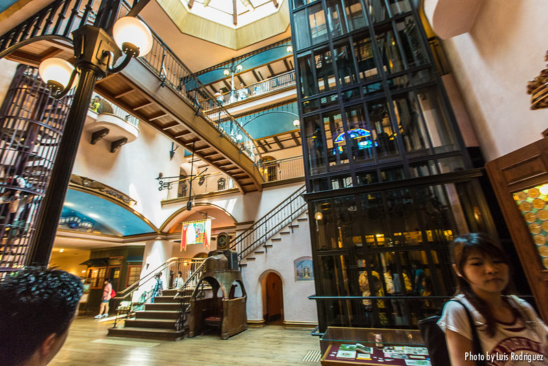

Nada de lo que sucede se olvida.
Nada de lo que sucede se olvida.
Museo Ghibli
El Museo Ghibli, inaugurado el 1 de octubre de 2001 en el parque Inokashira de Mitaka (Tokio), es un museo dedicado a las obras de anime realizadas por el Estudio Ghibli. El museo es la excusa perfecta para visitar el divertido barrio de Kichijoji, al oeste de Tokio. Y qué decir tiene, que es una visita casi obligada para niños y mayores que hayan disfrutado de películas tan icónicas como Mi vecino Totoro, Laputa, el castillo en el cielo, El viaje de Chihiro y tantas otras.

El propio museo, diseñado por el maestro Hayao Miyazaki, intenta llevar al visitante a una de sus historias de animación.
Ya el hall central, donde encontramos el servicio de información y desde el que comenzaremos nuestra visita al museo, recuerda muchísimo a la casa de baños de Yubaba, de la película El Viaje de Chihiro y la disposición de vidrieras de las que salen Totoro y sus amigos, puertas pequeñas que sólo pueden ser cruzadas por niños, paredes curvas que crean una atmósfera única, ascensores de otros tiempos, escaleras que parecen no tener fin… todo ello, como indican desde el propio museo, hace que el visitante se traslade a un mundo de ensueño como personaje principal de la historia.
El propio museo, diseñado por el maestro Hayao Miyazaki, intenta llevar al visitante a una de sus historias de animación. Ya el hall central, donde encontramos el servicio de información y desde el que comenzaremos nuestra visita al museo, recuerda muchísimo a la casa de baños de Yubaba, de la película El Viaje de Chihiro y la disposición de vidrieras de las que salen Totoro y sus amigos, puertas pequeñas que sólo pueden ser cruzadas por niños, paredes curvas que crean una atmósfera única, ascensores de otros tiempos, escaleras que parecen no tener fin… todo ello, como indican desde el propio museo, hace que el visitante se traslade a un mundo de ensueño como personaje principal de la historia.
